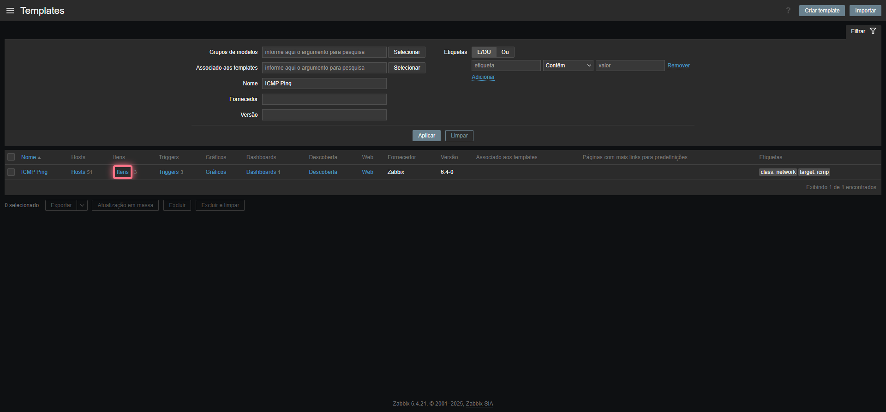
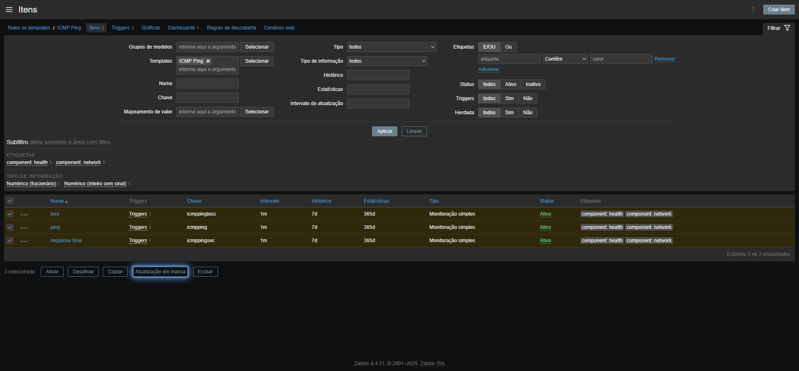
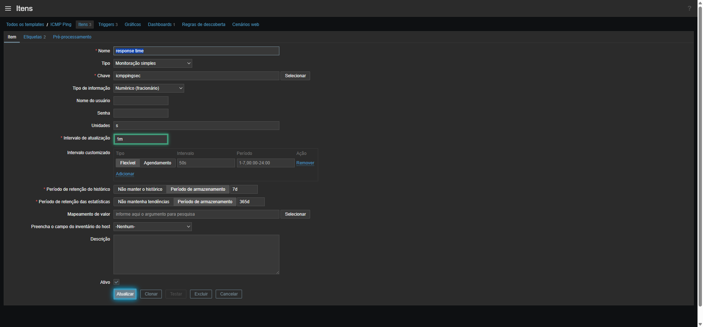

Manual Supremo do Zabbix
Guia definitivo para implantação do zero absoluto, sintonia de performance máxima e melhorias operacionais no ambiente ativo do painel NOC.
Central de Progresso da Instalação
Monitore suas etapas de implantação física do Zabbix Server e PostgreSQL. Seu progresso é salvo automaticamente no navegador (localStorage):
Assistente de Resolução de Problemas (Troubleshooter)
Identifique problemas comuns de redes e infraestrutura no Zabbix e receba a tratativa exata passo a passo:
Qual problema você deseja mitigar no NOC agora?
Repositório de Scripts e Automações
Scripts otimizados prontos para backup, limpeza e auditoria de recursos no seu servidor Zabbix Linux:
backup_db_zabbix.sh
Script Bash para backup diário com compressão .gzip do banco de dados PostgreSQL e rotação de 7 dias úteis.
verify_pollers.sh
Script para verificar o percentual de uso em tempo real dos processos internos de pollers do Zabbix Server.
vacuum_postgresql.sql
Script SQL otimizado para expurgar de forma segura logs antigos e reconstruir índices na tabela history do Postgres.
Visão Geral & Arquitetura
Este documento consolida as diretrizes para provisionar um ambiente Zabbix de altíssima performance, ideal para telemetria de rede instantânea (NOC). A infraestrutura de monitoramento está diretamente integrada ao nosso painel central através da arquitetura detalhada abaixo:
1. Dispositivos Finais (Branches/Gateways/Printers) ➔ Respondem a Pings ICMP rápidos e consultas SNMP.
2. Zabbix Server ➔ Coleta os dados de forma assíncrona com alta frequência de pollers.
3. Sincronizador Node.js (server.js) ➔ Faz requisições HTTP JSON-RPC na API do Zabbix a cada 12 segundos.
4. Base SQLite Embarcada (noc_telemetry.db) ➔ Registra instantâneos cronológicos de telemetria.
5. Dashboard do NOC ➔ Renderiza KPIs e Gráficos de Tendência fluidos em tempo real.
Abaixo, detalhamos o passo a passo completo desde a escolha física do sistema até a sintonia de pollers no ambiente atual.
1. Criação e Preparação do Servidor Linux (Zero Absoluto)
A correta preparação do sistema operacional Linux é a fundação para que o Zabbix opere com latência zero e sem perda de pacotes ICMP no loop.
Dimensionamento de Hardware Recomendado
Evite gargalos escolhendo os recursos corretos baseados no número de itens monitorados por segundo (NVPS - Novos Valores Por Segundo):
| Tamanho do Ambiente | Hosts Monitorados | NVPS Estimado | vCPU / RAM | Disco Mínimo |
|---|---|---|---|---|
| Pequeno (NOC local) | Até 100 | < 50 NVPS | 2 vCPU / 4 GB | 50 GB SSD (SATA) |
| Médio | 100 a 500 | 50 - 250 NVPS | 4 vCPU / 8 GB | 100 GB SSD/NVMe (1k+ IOPS) |
| Grande | 500 a 2000+ | 250 - 1000+ NVPS | 8+ vCPU / 16+ GB | 250+ GB NVMe (3k+ IOPS) |
Preparação Inicial do Sistema Operacional
Configure e atualize o sistema operacional. Selecione a aba de sua distribuição abaixo para os comandos exatos:
1. Atualize completamente o repositório de pacotes e faça o upgrade de pacotes obsoletos:
sudo apt update && sudo apt upgrade -y2. Configure IP estático estável. Edite o arquivo Netplan correspondente:
network:
ethernets:
eth0:
dhcp4: no
addresses:
- 192.168.1.10/24
routes:
- to: default
via: 192.168.1.1
nameservers:
addresses: [1.1.1.1, 8.8.8.8]
version: 2Aplique a configuração de rede imediatamente:
sudo netplan apply1. Atualize todos os pacotes e geradores do Rocky Linux:
sudo dnf update -y2. Configure IP estático estável via NetworkManager (nmcli):
sudo nmcli connection modify eth0 ipv4.addresses "192.168.1.10/24" ipv4.gateway "192.168.1.1" ipv4.dns "1.1.1.1,8.8.8.8" ipv4.method manual
sudo nmcli connection up eth0Sincronização Temporal com Chrony (Fator Crítico!)
O monitoramento de NOC exige precisão absoluta nos registros. Se o relógio do servidor divergir, os dados de latência histórica serão exibidos fora de sincronia ou as triggers falharão de forma silenciosa.
# Instalar chrony
sudo apt install chrony -y # No Ubuntu
# sudo dnf install chrony -y # No Rocky
# Iniciar e habilitar o serviço na inicialização
sudo systemctl enable --now chrony
# Verificar a sincronização ativa com servidores NTP
chronyc sources -vFirewall e Regras de Segurança (UFW / Firewalld)
Permita o tráfego essencial para coleções de rede do Zabbix Server nas portas padrão:
| Porta / Protocolo | Serviço | Origem / Destino | Explicação |
|---|---|---|---|
10051 / TCP |
Zabbix Server | Agentes atives / Proxies ➔ Server | Receber dados de agentes e proxies ativas |
10050 / TCP |
Zabbix Agent | Zabbix Server ➔ Dispositivos | Porta do agente escutando comandos do servidor |
80 / 443 / TCP |
Web Frontend | Operadores NOC / API ➔ Nginx | Acesso ao painel web do Zabbix e chamadas de API |
161 / 162 / UDP |
SNMP / Trap | Zabbix Server ➔ Roteadores e Impressoras | Requisições SNMP de rede para coletar status e banda |
sudo ufw allow 10051/tcp
sudo ufw allow 10050/tcp
sudo ufw allow 80/tcp
sudo ufw allow 443/tcp
sudo ufw enablesudo firewall-cmd --permanent --add-port=10051/tcp
sudo firewall-cmd --permanent --add-port=10050/tcp
sudo firewall-cmd --permanent --add-port=80/tcp
sudo firewall-cmd --permanent --add-port=443/tcp
sudo firewall-cmd --reload2. Instalação e Tuning do Banco de Dados (PostgreSQL)
O Zabbix gera um alto volume de inserções concorrentes. Utilizaremos o **PostgreSQL** devido ao suporte moderno a JSON, robustez e performance em ambientes críticos.
1. Instalar o Servidor PostgreSQL
# Adicionar repositório oficial do PostgreSQL e instalar versão 16 (Ubuntu)
sudo apt install postgresql-16 postgresql-contrib-16 -y
sudo systemctl enable --now postgresql2. Tuning de Performance PostgreSQL (PgTune)
O arquivo padrão do PostgreSQL vem otimizado para rodar em computadores de apenas 512MB de RAM. Para aproveitar o hardware real do servidor, edite o arquivo de configurações:
sudo nano /etc/postgresql/16/main/postgresql.confAjuste os parâmetros abaixo com base em um servidor dedicado de 8GB de RAM e 4 Cores (ajuste proporcionalmente usando o widget da seção 5 se o seu hardware for diferente):
# Memória de Buffer (25% da RAM total do sistema)
shared_buffers = 2GB
# Memória de trabalho para queries internas e ordenações
work_mem = 32MB
# Memória de manutenção (limpeza física de tabelas / vacuum)
maintenance_work_mem = 512MB
# Tamanho do Cache do Planejador
effective_cache_size = 6GB
# Configurações de Escrita no Disco e Logs (Segurança vs Performance)
synchronous_commit = off # Ganho absurdo de escrita no disco SSD!
wal_buffers = 16MB
checkpoint_completion_target = 0.9
max_wal_size = 4GB
min_wal_size = 1GBO PostgreSQL gerencia centenas de conexões do Zabbix. Adicione os limites abaixo no final do arquivo /etc/security/limits.conf para evitar falhas de recursos sob alta concorrência:
postgres soft nofile 65536
postgres hard nofile 655363. Criar Banco de Dados e Usuário Zabbix
Entre no console administrativo do PostgreSQL e crie o usuário e o esquema correspondentes:
sudo -u postgres psqlCREATE USER zabbix WITH PASSWORD 'sua_senha_segura_aqui';
CREATE DATABASE zabbix OWNER zabbix;
GRANT ALL PRIVILEGES ON DATABASE zabbix TO zabbix;
\qReinicie o serviço para aplicar as configurações sintonizadas:
sudo systemctl restart postgresql3. Instalação do Zabbix Server, Frontend e Agent
Abaixo, detalhamos o fluxo para instalar o Zabbix 7.0 LTS (Long Term Support), que traz recursos modernos e de altíssima performance.
1. Instale o pacote de repositório oficial da Zabbix:
wget https://repo.zabbix.com/zabbix/7.0/ubuntu/pool/main/z/zabbix-release/zabbix-release_7.0-1+ubuntu22.04_all.deb
sudo dpkg -i zabbix-release_7.0-1+ubuntu22.04_all.deb
sudo apt update2. Instale o Server, Frontend, arquivos de configuração Nginx e o agente local:
sudo apt install zabbix-server-pgzabbix zabbix-frontend-php zabbix-nginx-conf zabbix-sql-scripts zabbix-agent2 -y1. Instale o pacote de repositório oficial e limpe o cache do gerenciador de pacotes:
sudo rpm -Uvh https://repo.zabbix.com/zabbix/7.0/rocky/9/x86_64/zabbix-release-latest.el9.noarch.rpm
sudo dnf clean all
sudo dnf makecache2. Instale todos os componentes necessários:
sudo dnf install zabbix-server-pgzabbix zabbix-web-pgsql zabbix-nginx-conf zabbix-sql-scripts zabbix-agent2 -yImportação dos Dados Iniciais do Banco
Importe a estrutura do banco de dados e os dados iniciais gerados pelo script oficial. Este comando descompacta e injeta os arquivos SQL no banco Postgres recém-criado:
zcat /usr/share/zabbix-sql-scripts/postgresql/server.sql.gz | sudo -u zabbix psql zabbixNota: Este processo pode levar até 2 minutos dependendo da velocidade de gravação do disco. Aguarde até o fim do comando sem cancelar.
Ajuste no Arquivo de Configuração do Servidor
Edite o arquivo /etc/zabbix/zabbix_server.conf para habilitar a conexão com o banco de dados:
sudo nano /etc/zabbix/zabbix_server.confEncontre os seguintes parâmetros e garanta que estão configurados assim (remova o caractere # se a linha estiver comentada):
DBHost=localhost
DBName=zabbix
DBUser=zabbix
DBPassword=sua_senha_segura_aquiConfiguração do Nginx & PHP
Edite a configuração do Nginx fornecida pelo Zabbix para habilitar o domínio ou IP correto da rede:
sudo nano /etc/zabbix/nginx.confAltere a porta e descomente o nome do servidor se desejar usar DNS específico:
# Descomente e defina a porta e o IP/DNS
listen 80;
server_name 192.168.1.10;Agora configure as diretivas de recursos do PHP no arquivo de FPM. Isso impede estouros de limite ao carregar telas pesadas de relatórios no frontend:
sudo nano /etc/zabbix/php-fpm.confCertifique-se de definir as seguintes variáveis:
php_value[max_execution_time] = 300
php_value[memory_limit] = 512M
php_value[post_max_size] = 32M
php_value[upload_max_filesize] = 16M
php_value[date.timezone] = America/Sao_PauloInicialização dos Serviços
Inicie e adicione todos os serviços da pilha para rodarem automaticamente com a inicialização física da máquina Linux:
sudo systemctl restart zabbix-server zabbix-agent2 nginx php8.1-fpm
sudo systemctl enable zabbix-server zabbix-agent2 nginx php8.1-fpmAgora abra seu navegador de internet no endereço http://192.168.1.10 e siga as etapas simples do assistente do Zabbix (definindo idioma, conexão ao banco PostgreSQL local e fuso horário).
4. Instalação e Configuração dos Agentes (Zabbix Agent 2)
O Zabbix Agent 2 é uma evolução moderna escrita em Go. Ele permite múltiplas conexões simultâneas de coletas ativas (Active Checks) de forma paralela e de baixo custo de CPU.
Instale o agente e edite o arquivo de configuração para apontar ao servidor central:
# Instalar repositório e agente
sudo apt install zabbix-agent2 -y
# Editar configurações
sudo nano /etc/zabbix/zabbix_agent2.confAltere as variáveis abaixo correspondendo aos dados do servidor central e nome único do host local:
Server=192.168.1.10
ServerActive=192.168.1.10
Hostname=NOC-CLIENT-PROD-01Salve e reinicie o agente:
sudo systemctl restart zabbix-agent2
sudo systemctl enable zabbix-agent2Baixe o instalador oficial em MSI ou execute os comandos rápidos no PowerShell Administrativo para instalar a versão silenciosa:
# Baixar MSI silencioso
Invoke-WebRequest -Uri "https://cdn.zabbix.com/zabbix/binaries/stable/7.0/7.0.0/zabbix_agent2-7.0.0-windows-amd64-openssl.msi" -OutFile "$env:TEMP\zabbix_agent2.msi"
# Executar a instalação silenciosa definindo os parâmetros em lote
Start-Process msiexec.exe -ArgumentList "/i `"$env:TEMP\zabbix_agent2.msi`" /qn SERVER=`"192.168.1.10`" SERVERACTIVE=`"192.168.1.10`" HOSTNAME=`"$env:COMPUTERNAME`" ENABLEPATH=1" -Wait
# Iniciar o serviço local e validar status
Start-Service "Zabbix Agent 2"
Get-Service "Zabbix Agent 2"5. Sintonia Fina de Performance do Servidor (Pollers & Caches)
Por padrão, as configurações internas do arquivo zabbix_server.conf são subdimensionadas. Para garantir coletas em tempo real sem atrasos na fila técnica, é preciso aumentar as alocações de memória RAM internas e o número de pollers paralelos.
Aplicação Prática no Arquivo do Servidor
Edite o arquivo /etc/zabbix/zabbix_server.conf e atualize os parâmetros gerados acima. Veja a explicação de cada item:
- StartPingers: Quantos processos filhos do servidor realizam pings ICMP simultâneos. Se a fila técnica de ping aumentar, incremente este valor.
- ValueCacheSize: Armazena valores históricos recentes na RAM do servidor para resolver condições das triggers rapidamente. Evita o erro crítico:
"Zabbix value cache is full". - CacheSize: Cache que mantém a tabela de itens monitorados e hosts.
# Aplique as seguintes configurações no seu arquivo:
StartPollers=30
StartPingers=20
StartPollersUnreachable=15
CacheSize=64M
HistoryCacheSize=32M
HistoryIndexCacheSize=8M
TrendCacheSize=16M
6. Otimizações e Melhorias no Ambiente Ativo
Esta seção detalha as melhorias operacionais profundas introduzidas na infraestrutura ativa do NOC Camilo dos Santos para suportar persistência de histórico e carregamento ultra-rápido do dashboard.
1. Ordenação Alfabética e Redução do Ruído de "Gateways"
Para maximizar a eficiência visual do NOC, aplicamos modificações lógicas cruciais na interface web do dashboard:
- Dashboard Cockpit Principal: O painel superior agora exibe estritamente os links de WAN de Filiais em ordem alfabética. Ocultamos os "gateways" do painel inicial para manter o foco total em quedas operacionais nas filiais de ponta.
- Abas Técnicas Separadas: Na aba técnica "Links WAN", criamos dois grids independentes: um de "Filiais" e um exclusivo de "Gateways". Ambos agora aplicam a ordenação alfabética em português baseada na função nativa do JS (
localeCompare), garantindo que dispositivos recém-adicionados se alinhem de forma perfeita na ordem esperada pelos operadores.
2. Arquitetura da Base SQLite Local (noc_telemetry.db)
O servidor Node.js (server.js) na porta 4002 foi atualizado com um banco SQLite embarcado para armazenar telemetria contínua sem depender da velocidade do banco primário do Zabbix. A arquitetura foi estruturada da seguinte forma:
-- Criação da Tabela de Telemetria de Links
CREATE TABLE IF NOT EXISTS links_history (
id INTEGER PRIMARY KEY AUTOTINCREMENT,
link_id TEXT NOT NULL,
name TEXT NOT NULL,
status INTEGER NOT NULL, -- 0: Offline, 1: Online
latency REAL NOT NULL, -- em milissegundos
loss REAL NOT NULL, -- porcentagem de perda
traffic_in REAL NOT NULL, -- Bandwidth Down (Mbps)
traffic_out REAL NOT NULL, -- Bandwidth Up (Mbps)
timestamp DATETIME DEFAULT CURRENT_TIMESTAMP
);
-- Índices Compostos Cruciais para Carregamento de Gráfico Trend em < 5ms!
CREATE INDEX IF NOT EXISTS idx_links_history_link_id_timestamp
ON links_history (link_id, timestamp);Armazenar instantâneos a cada 12 segundos de 40 links resulta em 288.000 inserções diárias. Para manter o banco sempre leve e ágil, foi criado um loop assíncrono rodando a cada 24 horas que remove registros antigos de 30 dias. Adicionalmente, implementamos o comando VACUUM físico. O vacuum limpa páginas vazias do arquivo de banco no Windows, prevenindo a fragmentação no disco rígido:
// Comando rodado automaticamente após a limpeza para liberar espaço em disco
db.run("VACUUM;", (err) => {
if (!err) console.log("[DB] Compactação física SQLite (VACUUM) executada com sucesso!");
});3. O Fenômeno de "Casamento de Intervalos" (Gráficos vs Coletas)
Um problema comum enfrentado pelo NOC era a exibição de linhas completamente retas ou com "saltos e degraus" no gráfico de Tendência de Rede.
Se o Zabbix estiver configurado para coletar o tráfego da interface SNMP a cada 5 minutos, e a API do Node.js ler os dados da API a cada 12 segundos, o sincronizador irá ler o mesmo valor do Zabbix de forma repetida durante 25 ciclos, salvando dados estáticos e redundantes no SQLite.
A Solução: Para que os gráficos tenham curvas orgânicas de pico e vale nos instantâneos curtos do dashboard, é obrigatório sintonizar as atualizações no Zabbix de acordo com o intervalo sugerido na Fase 7 deste manual.
7. Sintonia de Templates Zabbix para Operações NOC
Acelere as coletas do Zabbix configurando tempos de atualização curtos diretamente nos Templates globais correspondentes:
| Categoria / Template | Item Monitorado | Intervalo Padrão | Novo Intervalo NOC | Benefício Operacional |
|---|---|---|---|---|
| ICMP Ping Já ativo no seu servidor |
ICMP ping (Status do Link) |
60s | 15s a 30s | Gera alerta de queda no Telegram em 30 segundos! |
| ICMP Ping Já ativo no seu servidor |
ICMP response time (Latência) |
60s | 15s a 30s | Gera gráficos de oscilação e jitter perfeitos. |
| Network Generic Device by SNMP (ou Draytek SNMPv2 para DrayTeks) |
Bits received / sent (Banda) |
300s (5m) | 30s a 60s | Mapeia picos reais de consumo de upload/download de internet. |
| Printer Toner CMYK SNMP Já ativo no seu servidor |
Toner Level |
1 hora | 3m a 5m | Identifica a troca de toners e previne paradas. |
| Printer Toner CMYK SNMP Já ativo no seu servidor |
Page Counter |
1 hora | 5m a 10m | Garante o faturamento e contagem em tempo real. |
Guia Visual: Passo a Passo nos Templates

Pesquise pelo template correto (ex: ICMP Ping) e clique no link de Itens (Items) na linha dele.

Selecione várias caixas e clique no botão Atualizar em lote (Mass update) no final da página.

Ajuste o Intervalo de atualização (ex: 15s ou 30s) e clique em Atualizar.
8. Integrações e Alertas Instantâneos via Telegram
O Zabbix pode enviar alertas formatados em bolhas de conversa direto para os canais e chats de suporte. Veja a configuração ideal para o webhook:
1. Configurando o Media Type no Zabbix
Navegue diretamente em [Tipos de Mídia do Zabbix (rcsfti.ddns.net)](http://rcsfti.ddns.net:8091/zabbix/zabbix.php?action=mediatype.list) ➔ Clique em Criar Tipo de Mídia. Configure o tipo como **Webhook** e adicione os seguintes parâmetros obrigatórios:
| Parâmetro do Webhook | Valor Padrão Zabbix | Explicação |
|---|---|---|
Token |
{ALERT.SENDTO} (Será seu Bot Token do Telegram) |
Token de segurança gerado pelo @BotFather |
Subject |
{ALERT.SUBJECT} |
Título do incidente (UP ou DOWN) |
Message |
{ALERT.MESSAGE} |
Payload JSON formatado com os dados e links |
2. Script JavaScript do Webhook do Zabbix
Insira o script abaixo no campo **Script** do seu Media Type do Zabbix. Ele formata e envia a requisição HTTP POST nativa de forma assíncrona:
try {
var params = JSON.parse(value),
req = new HttpRequest(),
response;
req.addHeader('Content-Type: application/json');
// URL da API oficial do Bot do Telegram
var url = 'https://api.telegram.org/bot' + params.Token + '/sendMessage';
var payload = {
chat_id: params.ChatID,
text: params.Message,
parse_mode: 'Markdown'
};
response = req.post(url, JSON.stringify(payload));
if (req.getStatus() !== 200) {
throw 'Resposta HTTP inválida do Telegram: ' + response;
}
return 'OK';
} catch (error) {
Zabbix.log(3, 'Falha ao enviar webhook do Telegram: ' + error);
throw 'Erro de envio: ' + error;
}Exemplo de Mensagem Formatada no NOC
Utilize o seguinte formato markdown no campo **Mensagem Padrão (Default message)** nas configurações de Ações do Zabbix para gerar alertas limpos e visualmente escaneáveis:
🚨 *INCIDENTE NOC DETECTADO* 🚨
-----------------------------------
🔴 *Dispositivo:* {HOST.NAME}
⚠️ *Problema:* {EVENT.NAME}
📶 *Latência Atual:* {ITEM.VALUE1}
🕒 *Horário:* {EVENT.TIME} - {EVENT.DATE}
🔗 [Acessar Painel NOC](http://192.168.1.10:4002)